I begin by performing a port scan against the target machine to identify exposed services. The scan reveals that ports 21 (SSH) and 80 (HTTP) are open.
To ensure proper name resolution, I add the target domain to my
local /etc/hosts file.
While exploring the web application, I notice a section called “Publish with us”, which immediately stands out as a potential attack vector.
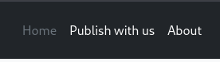
This section allows file uploads and contains multiple text input fields, increasing its attack surface.
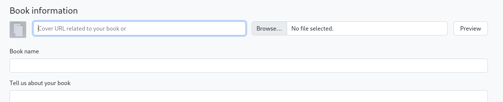
To identify additional attack vectors, I perform both directory and DNS enumeration in search of hidden endpoints or login panels. During this process, I confirm the presence of the same upload endpoint discovered earlier.
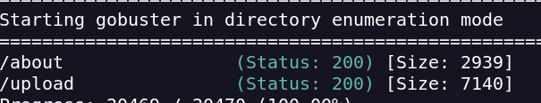
To better understand how the server processes requests, I intercept the traffic using Burp Suite and analyze the server’s responses.
The Book Information feature appears to make internal requests on the server side, suggesting a potential SSRF (Server-Side Request Forgery) vulnerability.
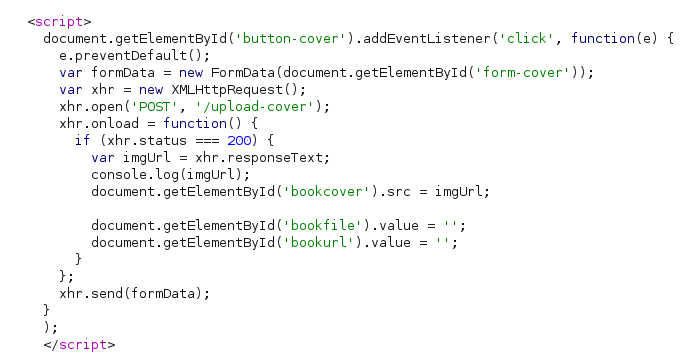
Since the application fetches data from a URL, it may be possible to manipulate this request and force the server to make requests to arbitrary internal resources.
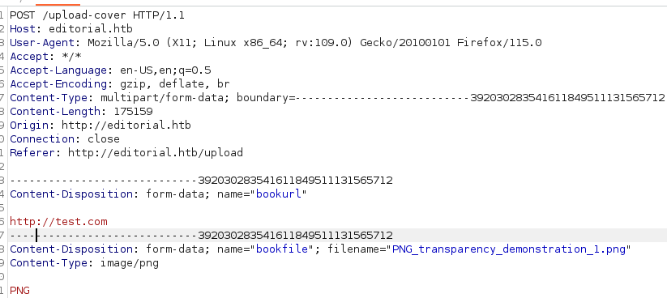
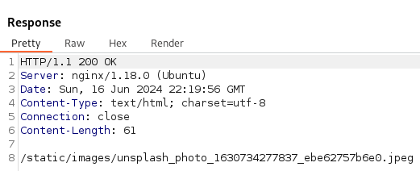
In order for the request to be executed, I need to click the Preview button.
By supplying localhost and a vulnerable internal
port in the URL, the server returns an internal response.
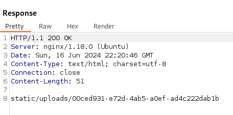
I send a GET request to the discovered internal endpoint, which returns a response revealing several internal API routes.
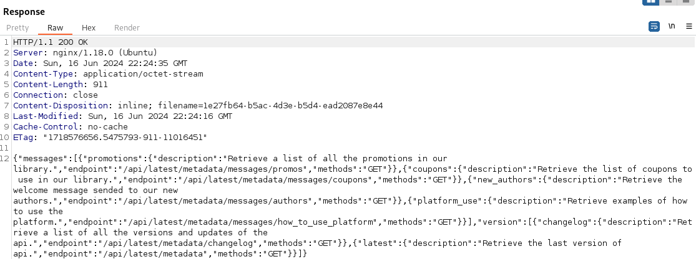
Among the available endpoints, the authors endpoint looks particularly interesting.
Querying this endpoint returns valid credentials for a user.
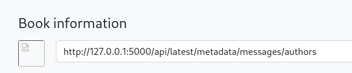
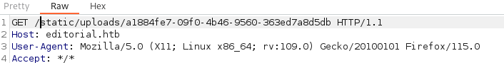
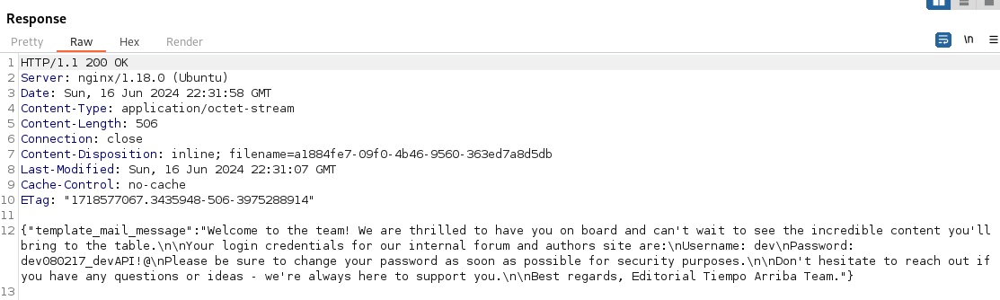
Using the leaked credentials, I log in via SSH
and successfully retrieve the user.txt flag.
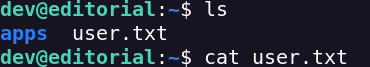
While exploring the filesystem, I discover a hidden
.git directory inside the apps folder,
which may contain sensitive information.
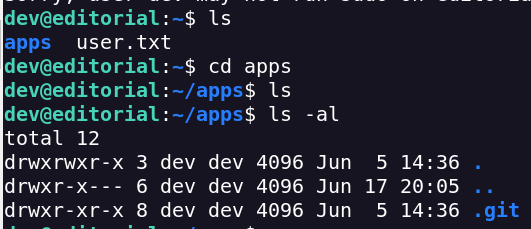
Inspecting the Git logs reveals multiple commits. One commit in particular stands out:
1e84a036b2f33c59e2390730699a488c65643d28Reviewing this commit exposes another user named prod, along with valid credentials.
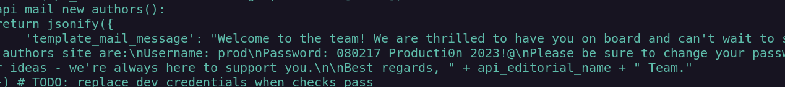
After switching to the prod user, I discover that I am allowed to execute a specific command as the root user.
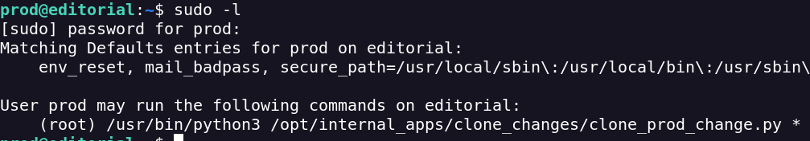
I analyze the script being executed and observe that it relies on a library used for cloning repositories.
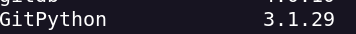
This library is vulnerable to Remote Code Execution, identified as CVE-2022-24439.
By exploiting this vulnerability, I am able to execute commands
as root and retrieve the contents of the root.txt
file.
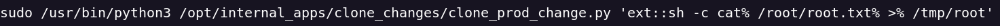